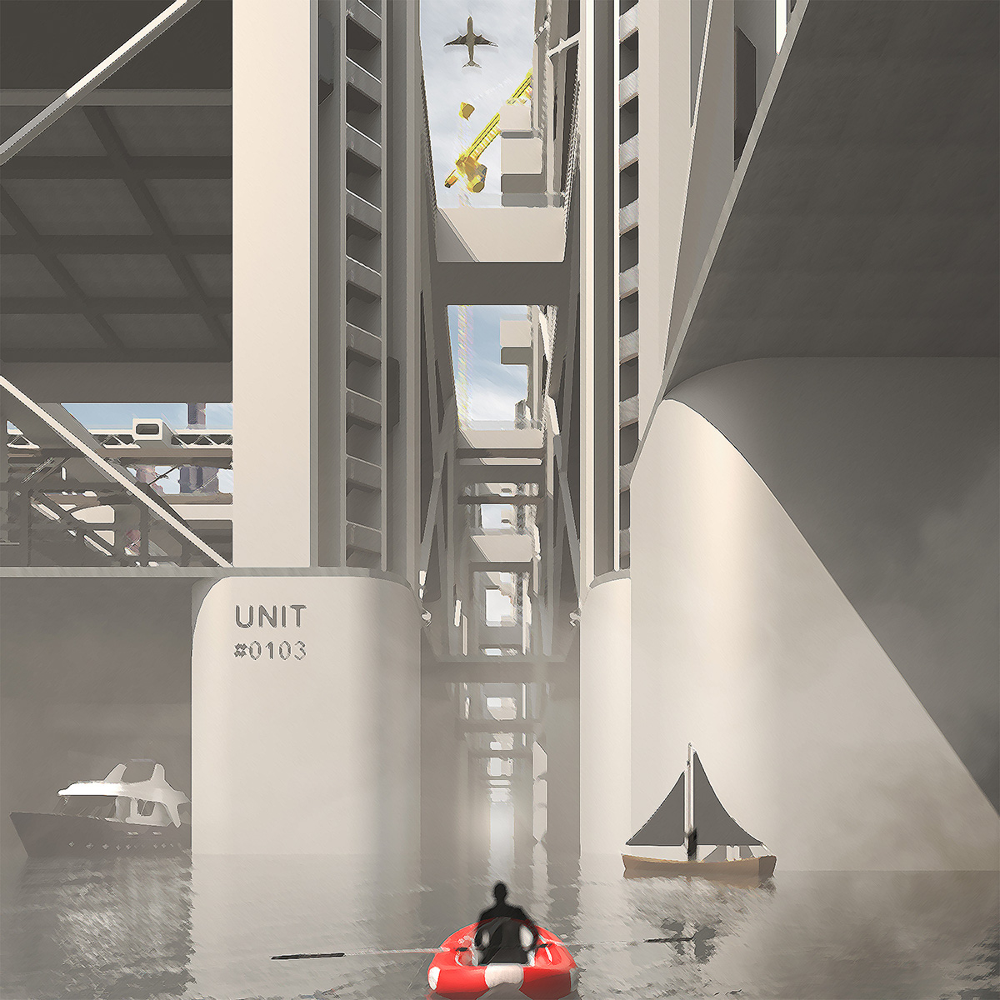
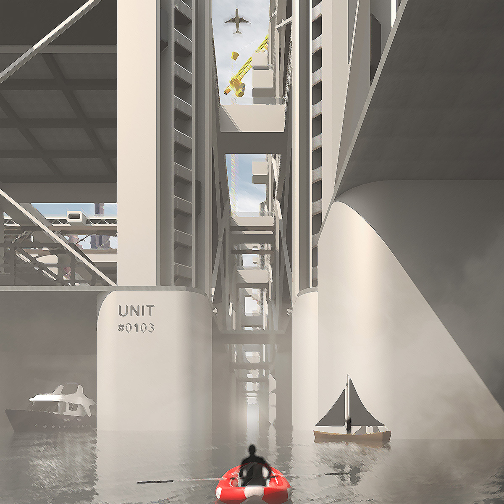
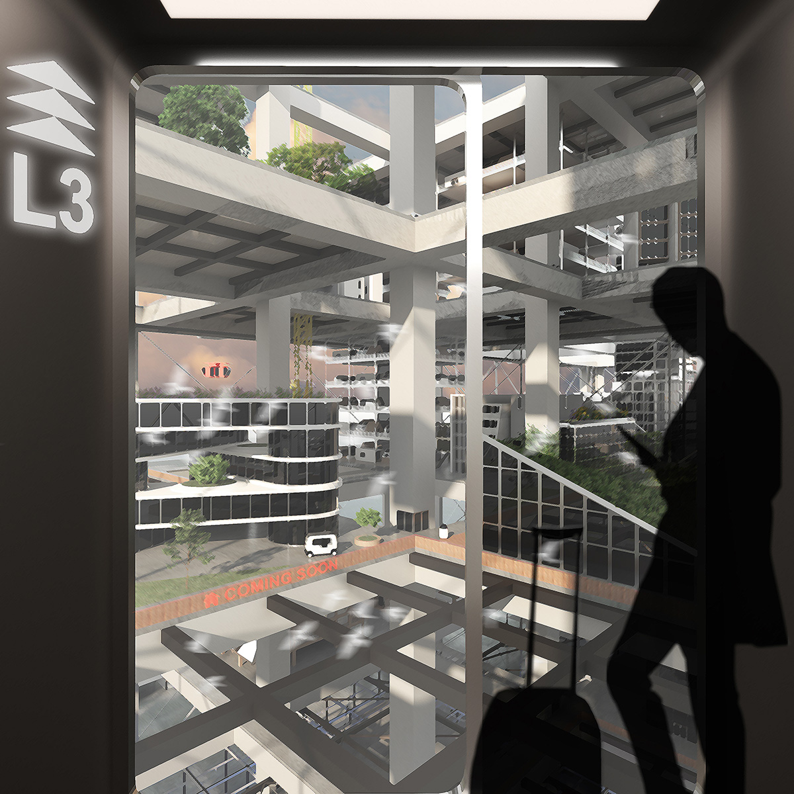
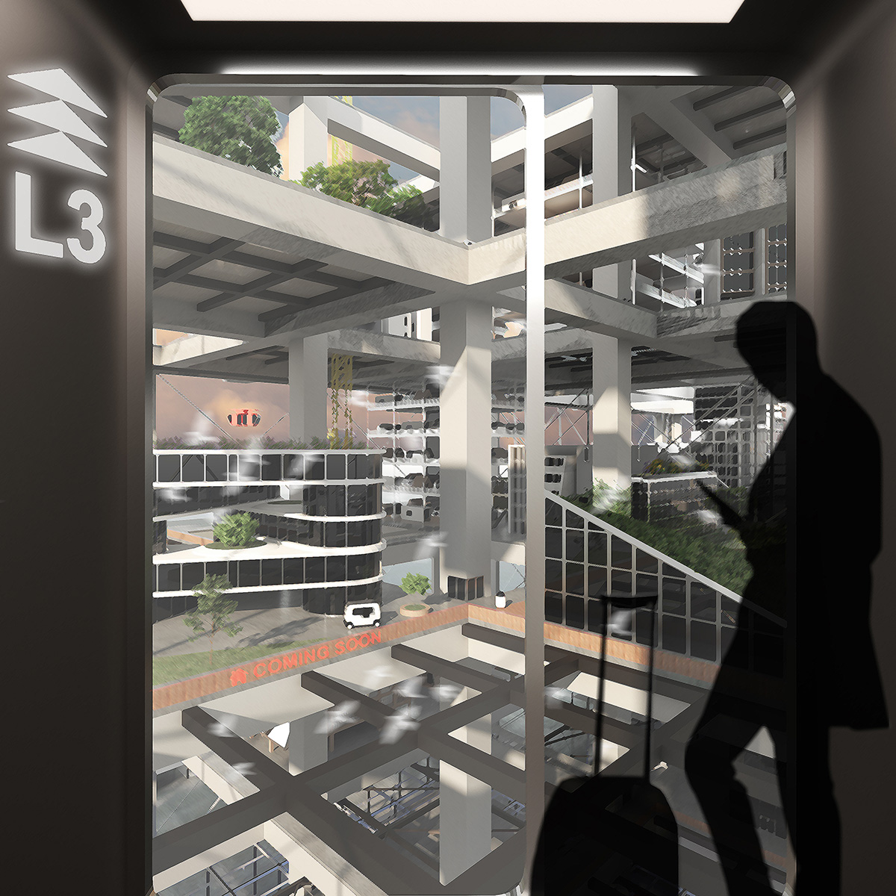

INFINITE CITY
While moving away from the postwar reconstruction that nourished avant-garde architectural movements, contemporary society generates a new
round of displacement and placelessness: that the ways we live and our social existence are dissociating from fixed places. On one hand,
the pervasive digital technology dilutes human-space ties; on the other hand, social and environmental uncertainties contribute to a floating
population whose identities shift in constant moving and resettling. In response to the urban anxieties of now and future, can we bring back the
20th-Century spirits of architectural imagination as a stimulus to address challenges, raise awareness, and provoke discussion on the changing world?
INFINITE CITY is an open-ended exercise of architectural imagination that creates an alternative world where displaced architectural typologies
infinitely proliferate upon megastructural frames. It draws inspirations from the 1960s’ megastructure projects, highlights the modularity and
extensibility of megastructure in creating layered artificial grounds, while aiming for more comprehensive images of the infinite city to communicate
architectural thoughts in wider audiences. The megastructural frames emerge in water like interlocked drilling platforms, grow with vertical stacking
of layers, and expand with new units docking to existing ones. As they extend, their fundamental roles of material circulation, transportation networks,
building lots, and energy grids become more powerful and interconnected, resembling the infrastructures of today’s urbanity. Properties built upon them,
on the other hand, are independent from their neighbors in program, form, cultural or social identity, symbolizing the displacements and placelessness
in the contemporary world. This city nourishes a society where people enjoy optimized freedom of moving and exploring but no longer having a materialized
notion of home or belongingness. The following images show everyday scenarios that one might see when inhabiting the city.


 



 
